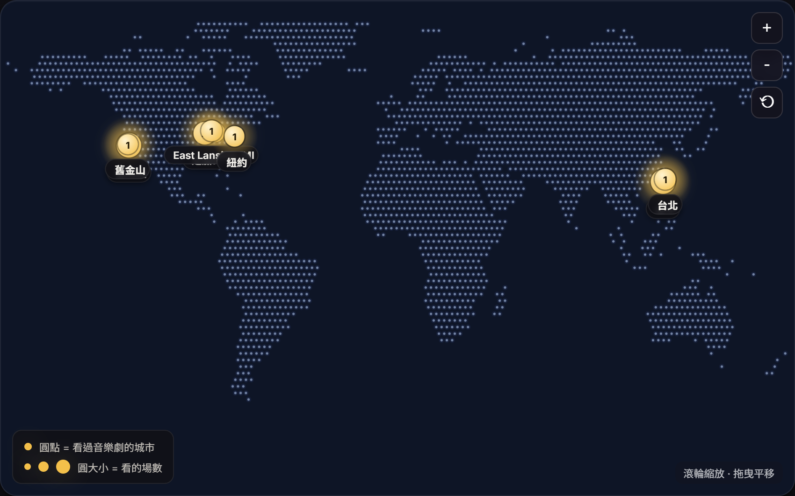
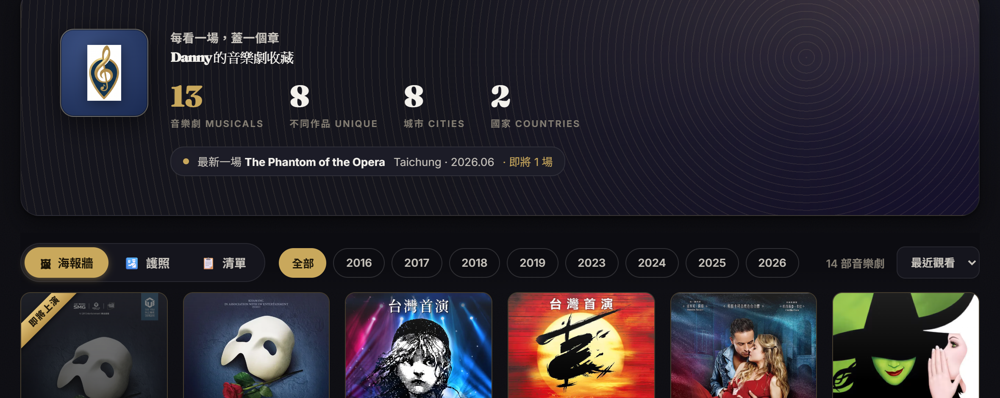
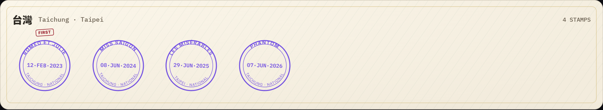
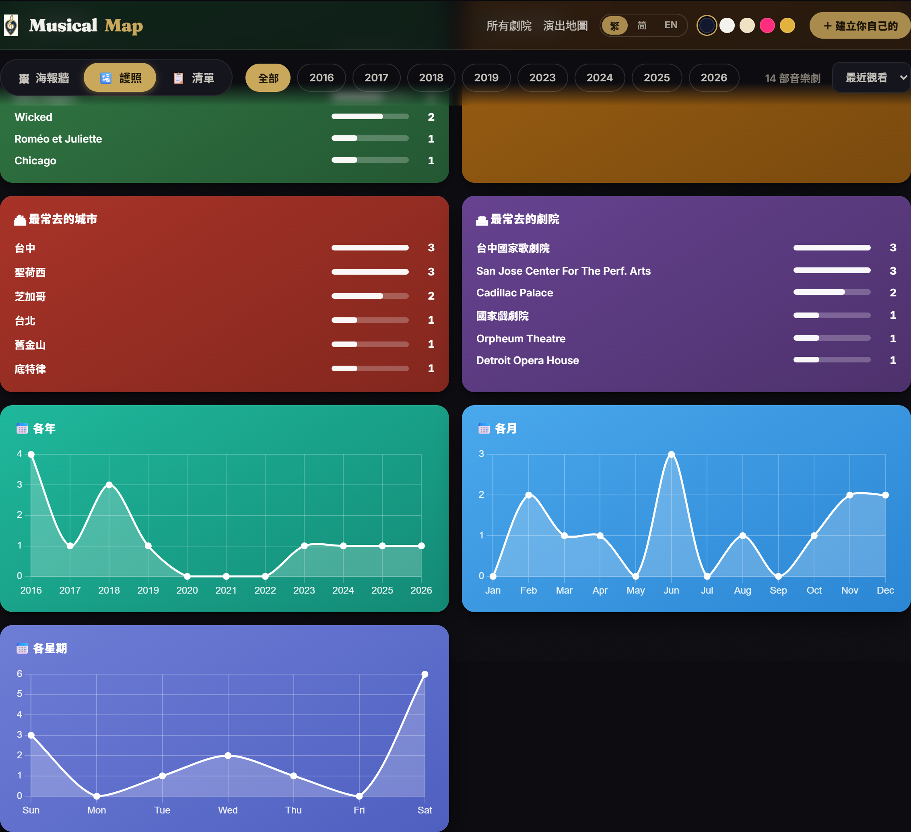

免登入就能探索此刻全球上演的每一齣——百老匯、倫敦西區、各國巡演。登入之後,把你看過的都記成一本觀劇護照,分享出去。
打開地圖,全球此刻正在上演的音樂劇一次看盡。想看哪一齣,直接連到官網訂票。

圓越大,同時在演的劇越多。點一座城市,看那裡有哪些劇;點一齣劇,看檔期、劇院、海報與簡介。

每一齣都附官方網站與售票連結。我們不賣票、不抽成——只把你帶到對的地方。
看過的那些,別讓它們只留在記憶裡。
登入之後,你看過的劇會長成一面海報牆、一本蓋章護照,還有你的觀劇統計。全部自動生成。

中英文搜尋都行,劇院、城市、海報自動補上。填看劇的日期、評分、座位、心得——只記得年份也沒關係。每看一場,護照上就多一個章。

最常看的劇、去過的城市與國家、各年各月的觀劇分布——不用自己算,一目了然你是什麼樣的劇迷。
設一個網址名稱,就有一個公開頁能傳給朋友。票價、座位要不要公開由你決定;筆記永遠只有你看得到。
我們只讀你的名稱與 email,不會代你張貼任何內容。你的收藏存在帳號裡,換手機、換電腦都在。